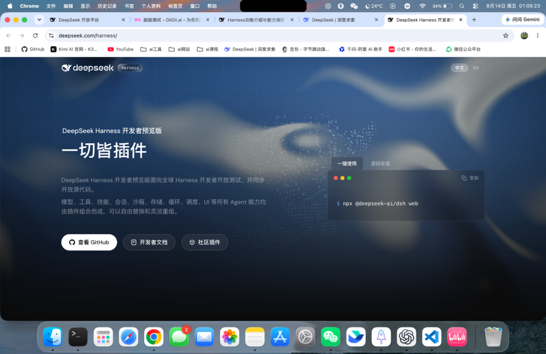
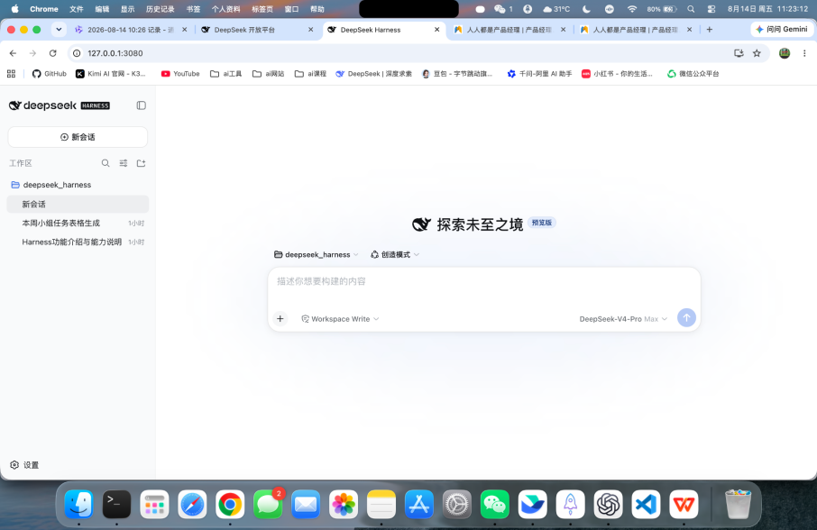
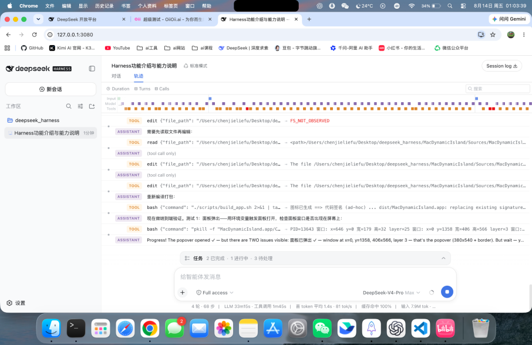
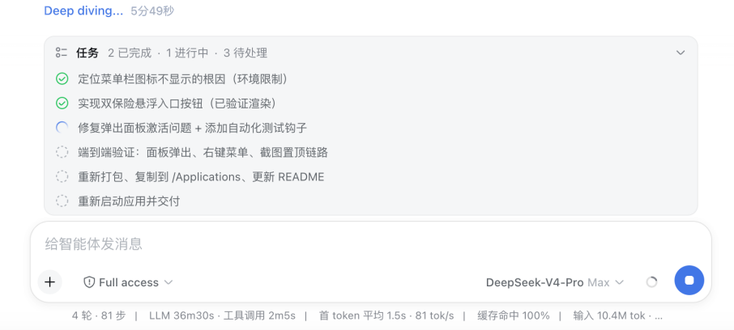
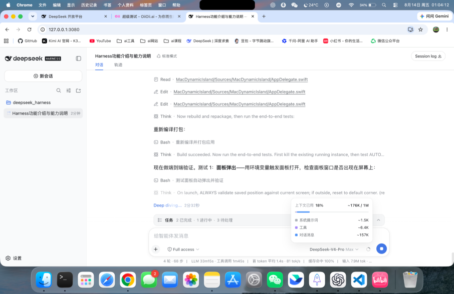
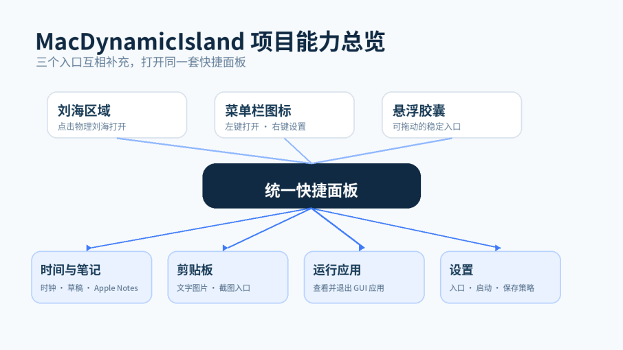
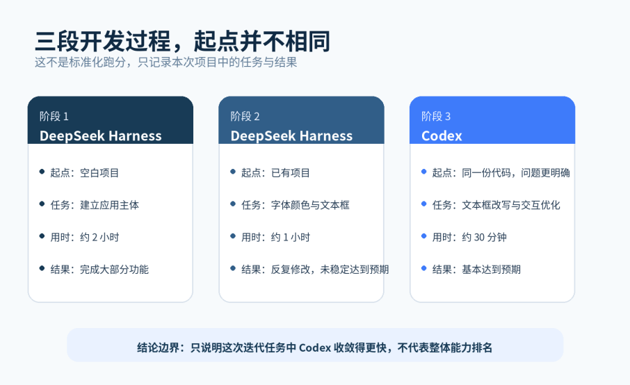

DeepSeek Harness上线后，以“一切皆插件”的理念重新定义AI编程工具。我用它两小时开发出macOS应用，但后续修改却遭遇稳定性挑战。本文通过真实项目体验，探讨Agent从Demo到可用产品的关键瓶颈，以及Harness如何重塑人机协作流程。
DeepSeek Harness上线后，官方页面上最显眼的一句话是：“一切皆插件”。
比起又一个“更强的AI编程工具”，这句话更吸引我。它传递出来的意思是，DeepSeek想做的似乎不只是让模型帮人写代码，而是为Agent搭建一套可以自由组合的工作环境。
于是，我决定用一个真实项目试试它。
我让DeepSeek Harness开发了一款名为MacDynamicIsland的原生macOS工具。它可以从MacBook刘海区域、菜单栏图标和悬浮胶囊三个入口打开，包含快捷笔记、剪贴板记录、运行应用管理、截图置顶等功能。
大约两个小时后，项目的大部分功能已经可以运行。
这个速度确实超出了我的预期。过去，一个产品想法从文字描述走到可以点击、可以操作的Demo，中间往往还隔着原型、技术方案和开发实现。现在，我只需要不断描述需求、检查结果，再告诉Agent下一步做什么，一个可以在电脑上运行的应用就出现了。
我原本以为，最难的部分已经结束，剩下的只是细节打磨。
但当我要求它更正字体颜色、优化添加文字后的文本框交互时，情况发生了变化。DeepSeek Harness开始反复修改：有些修改没有达到预期，有时修好一个问题，又影响了其他交互。继续尝试一个小时后，结果仍然没有达到我认为可以接受的状态。
后来，我把同一份代码交给Codex。大约30分钟后，Codex完成了文本框改写、字体颜色更正和其他几处交互优化，项目基本达到了我的预期。
当然，这不是一次严格的模型评测。Codex接手时已经有完整的项目基础，问题也经过前面的试错变得更加明确。仅凭这一次体验，不能简单得出谁一定更强。
但这段经历让我开始关注一个比“谁写代码更快”更具体的问题：
当AI已经可以在两小时内把一个想法变成Demo，决定它能否进入日常工作流的，会不会是后续一次又一次修改中的稳定性？
01 DeepSeek想做的，不只是另一个AI编程工具
在理解DeepSeek Harness之前，需要先区分两个经常被放在一起讨论的东西：Model和Harness。
模型负责理解需求、分析问题和决定下一步做什么，但仅有模型还不能完成一个真实项目。它需要读取文件、修改代码、执行命令、调用工具、保存上下文，还要知道任务进行到了哪里。
如果把模型理解成Agent的大脑，那么Harness更像是它的工作环境：给它工具，告诉它能访问什么，记录它做过什么，并让它在多轮任务中持续工作。
DeepSeek在官方页面上直接写出了自己的判断：
Agent = Model + Harness
这也解释了为什么DeepSeek Harness没有把重点只放在代码生成上。按照官方介绍，它将模型、工具、技能、会话、沙箱、存储、循环、调度和UI等能力都交给插件提供，再通过Cordis内核处理插件的加载、卸载与依赖关系。
DeepSeek没有把这些能力全部固定在一套封闭的产品里，而是试图将它们拆开。
开发者可以替换模型，可以增加新的工具，也可以重新组合沙箱、存储和界面。官方提供的标准模式、PTC模式、极简模式与创造模式，就是针对不同任务组合Agent能力。
这正是“一切皆插件”背后的野心。
过去我们评价AI编程产品，往往先看它使用了什么模型、生成代码的速度如何、一次能写多少文件。但随着模型能力继续提升，决定使用体验的因素可能越来越多地来自模型之外：
它能看到多少项目上下文？能调用哪些工具？如何拆分任务？怎样保存工作进度？失败后能否恢复？开发者能不能替换其中某一项能力，而不必推翻整套系统？
这些问题都属于Harness。
从这个角度看，DeepSeek Harness想竞争的并不只是一个AI编程工具的位置。它更像是在尝试搭建一层开放的Agent开发与运行环境：模型只是其中一个重要部分，工具、技能、会话、沙箱和UI都可以继续生长。
现在谈它是否已经建立起插件生态还太早。DeepSeek官方也明确说明，产品仍处于开发者预览阶段，核心插件和基础API还会持续迭代。
但至少从产品方向上看，它已经不满足于把DeepSeek模型装进另一个聊天框里。它想把模型如何工作、通过什么工作，以及开发者怎样重新组合这些能力，都纳入自己的产品边界。

02 界面很简洁，但Agent做过什么都能被看见
开始使用后，DeepSeek Harness给我的第一个感受，是界面比预想得更简单。
新建会话时，页面中央只有工作区、运行模式、权限、模型选择和输入框。没有一上来就把插件、工具、上下文和运行参数全部摆在用户面前。即使不了解Harness的技术架构，用户也能先从一句“我想做什么”开始。

但当任务开始运行，隐藏在简洁界面背后的信息会逐渐展开。
在对话页面里，我可以看到它读取了哪个文件、修改了什么、执行了哪条命令，以及当前准备验证什么。它不只是给出一句“正在为你处理”，而是把完成任务所经过的主要动作放回对话中。
如果想进一步查看，还可以切换到Trajectory轨迹视图。这里会把模型输出与工具调用按照时间展开，读取、编辑、命令执行和结果都有对应记录。结果出现问题时，这个页面至少让我有机会知道问题大概发生在哪一步。

任务可视化同样给我留下了很深的印象。
当一个需求被拆成多项工作后，页面会显示哪些任务已经完成、哪一项正在执行、后面还有哪些任务等待处理。过去在聊天框里使用AI时，模型经常一边回复一边做事，用户只能通过不断滚动对话猜测它进行到了哪里。任务面板把这种模糊状态变成了一个可以快速理解的进度结构。

上下文额度也被直接展示出来。用户不仅能看到已经使用的比例，还能进一步区分系统提示词、工具和对话消息分别占用了多少上下文。页面底部还会显示轮次、步骤、模型耗时、工具调用耗时、首Token时间、生成速度和缓存命中情况。

这些信息未必是每个用户每次都会查看，但它们让Agent的工作不再完全藏在一句“正在思考”后面。
我认为这套设计做得好的地方，是它没有因为信息多，就要求所有用户先学会看这些信息。
开始任务时，界面足够克制；任务运行后，过程、进度、上下文和工具调用又可以逐层展开。普通用户可以停留在对话层，想进一步判断执行状态的人则可以继续进入轨迹和任务层。
这种过程透明化不是简单地把日志搬到网页上。它改变了用户与Agent的关系。
面对一个只给结果的聊天框，用户更多是在等待答案；面对一个能够展示任务、轨迹和资源消耗的工作界面，用户开始像是在观察一个执行者。我们可以知道它目前在做什么，也可以根据过程中暴露的信息，决定继续等待、补充要求还是及时停止。
对于需要运行几分钟甚至更久的复杂任务，这种“知道它正在做什么”的感受很重要。它不一定让模型写出更好的代码，却能减少用户面对长任务时的不确定感，也为后续检查和接管留下入口。
从产品角度看，DeepSeek Harness开始认真处理一个过去经常被忽略的问题：当Agent从回答问题变成持续执行任务，用户应该如何理解它的工作状态？
03 两小时，我用它做出了MacDynamicIsland的大部分功能
为了测试DeepSeek Harness，我没有选择常见的Todo List或简单网页，而是尝试做一个与macOS系统交互的原生工具。
这个项目后来被我命名为MacDynamicIsland。
我希望它能够利用MacBook原本只是用来放置摄像头的刘海区域，让用户从这里打开一个快捷面板。同时，为了兼容不同设备和使用习惯，应用还需要提供菜单栏图标和可以拖动的悬浮胶囊。三个入口打开的是同一套面板，也可以在某个入口无法使用时互相补充。
在大约两个小时的开发中，DeepSeek Harness已经完成了当前仓库中的大部分功能。
这套应用最终包含四个主要页面：时间与笔记、剪贴板、运行应用和设置。用户可以快速记录内容并保存到Apple Notes，也可以查看复制过的文字与图片；截图后，图片能够以置顶窗口的方式展示，并添加文字；运行应用页面可以查看已经打开的程序；设置中则可以管理开机启动、不同入口、剪贴板保存时间与截图功能。
你可以在GitHub上查看这个项目：
https://github.com/chenjieliefu/MacDynamicIsland
它当然还不能被称为一款经过长期验证的成熟产品，但它已经不只是一个静态原型。
为了让这些功能运行起来，Agent需要创建Swift项目、读写多个代码文件、调用macOS原生能力、处理菜单栏与窗口层级、编译应用，并在修改后重新启动和验证。截图功能还涉及系统权限，刘海入口需要判断设备屏幕区域，悬浮窗口也要处理拖动、缩放和置顶。
我并没有逐行编写这些代码。我的主要工作，是描述想实现的效果、查看它给出的结果，再根据实际体验继续提出要求。
这件事对产品经理的意义，可能比“AI又能写一个应用了”更具体。
过去，产品经理验证想法时，能够独立完成的部分通常停留在需求文档、流程图或交互原型。原型可以验证页面关系，却很难完整暴露系统权限、窗口层级、数据保存和真实操作手感带来的问题。想进入这一层，往往需要开发资源。
Coding Agent正在缩短这段距离。
当一个想法可以在几小时内变成真实运行的Demo，产品经理面对的不再只是一张“看起来应该能用”的原型图，而是可以亲手操作、发现问题并继续修改的产品。很多原本要到开发阶段才会暴露的细节，也会更早出现。
这并不意味着产品经理从此不需要开发，更不意味着几小时生成的项目可以直接交付用户。代码质量、安全、兼容性和长期维护仍然需要专业判断。
但从0到1的门槛确实发生了变化。过去被开发成本挡住的小想法，现在至少有机会先被做出来，再判断它是否值得投入更多资源。
从这个角度看，DeepSeek Harness在这次项目中展现出的能力，不只是代码生成速度，而是把“产品想法—可运行Demo—真实体验”之间原本较长的路径压缩到了两个小时左右。

04 真正卡住它的，是在已有结果上继续修改
项目大部分功能可以运行后，我开始把注意力放到交互细节上。
其中一项是截图中的文字标注。我希望用户可以在截图上添加文本框，修改字体大小和颜色，并调整文本框的位置与尺寸。第一版虽然已经能够添加文字，但字体颜色和文本框交互没有达到我的要求。
从产品描述上看，这似乎只是一次局部优化：更正字体颜色，再把文本框做得更好用一些。
我原本也认为，这应该比从头生成整个应用简单。
但接下来的一个小时里，DeepSeek Harness一直没有稳定完成这次修改。有些要求在修改后仍未达到预期；有时一个问题看起来得到解决，另一个原本正常的交互又受到影响。它持续读取文件、编辑代码、重新编译和验证，整个过程在界面上都能被看见，但结果始终没有稳定收敛。
这让我意识到，从0到1和在已有项目中继续迭代，虽然都叫“写代码”，实际上是两类不同的任务。
第一次生成时，Agent拥有较大的选择空间。只要最终功能能够运行，它可以选择自己更容易实现的结构和路径。部分细节还不够成熟，也不会立刻阻止Demo出现。
进入迭代后，选择空间反而缩小了。
Agent不仅要理解我这次提出的新要求，还要读懂已有代码为什么这样组织；不仅要让新效果出现，还要保证已经正确的功能不被破坏。修改范围可能只集中在一个文本框，需要保留的约束却分散在整个交互过程中。
以文本框为例，它不只是屏幕上的一个矩形。用户添加文字后，会经历编辑和展示两种状态；可能需要选择部分文字，也可能修改整个文本框；文本框可以拖动、缩放，还要处理焦点、删除和工具栏。字体颜色改变之后，还要确保不同状态下的显示保持一致。
从最终功能看，这只是“优化文本框”；从实现过程看，它是一组互相关联的状态与操作。
当Agent只修复眼前的表现，没有完整理解这些关系时，就容易出现我这次遇到的情况：改动确实发生了，但新的结果没有稳定满足全部要求；修好一处，又在另一处产生变化。
这也是为什么，用AI做产品不能只测试“第一次能生成什么”。
现实中的产品很少在第一版之后就结束。更多时间花在需求变化、细节修正、历史代码理解和回归检查上。一个Coding Agent可以很快写出第一版，只能说明它具备很强的启动能力；它能否在十次、二十次修改后仍然理解当前产品，才更接近日常开发需要的能力。
对我来说，DeepSeek Harness的两小时与后续一个小时并不矛盾。前者证明了它从0到1的能力确实强，后者则让我看见：当任务从“创造一个结果”进入“在约束中修正结果”，它还没有表现出同样稳定的收敛速度。
05 同一份代码交给Codex，为什么30分钟就基本完成了
在DeepSeek Harness反复修改仍未达到预期后，我把同一份代码交给了Codex。
Codex接手时，MacDynamicIsland的大部分功能已经由DeepSeek Harness完成。我的要求也没有发生根本变化，重点仍然是文本框改写、字体颜色更正和相关交互优化。
大约30分钟后，这些主要问题基本得到了处理，项目达到了我当时认为可以接受的状态。
如果只看时间，很容易把这段经历写成“DeepSeek一个小时没做好，Codex半小时就做好了”。但这样的比较虽然有冲突感，却并不准确。
两者面对的起点并不相同。
DeepSeek Harness承担了从空白项目到大部分功能可运行的主要工作。它不仅写出了基础代码，也把项目推进到了能够实际发现细节问题的阶段。Codex接手时，这些成果都已经存在。
同时，经过前一个小时的反复尝试后，我对问题的描述也更清楚了。我已经知道哪些效果不对、哪些交互容易被破坏，以及自己最终希望看到什么。Codex除了继承代码，也继承了更加明确的问题边界。
因此，这次经历不能证明Codex的整体能力一定强于DeepSeek，也不能把两个阶段的时间直接做成模型跑分。
它至少能够支持一个更克制的判断：在这份已有代码和这组明确的局部修改任务中，Codex更快地让结果收敛到了我的基本预期。
这对我评估Coding Agent的方式产生了一点影响。
以前看到AI编程产品的演示，我很容易被“几分钟生成一个网站”“一句话做出一个应用”吸引。这样的能力当然重要，因为它直接决定了一个想法能否被快速启动。
但当越来越多工具都能生成Demo后，首次生成速度的差异可能会逐渐缩小。用户接下来更关心的，会是另一些不容易在演示视频中表现出来的问题：
它能否理解一份已经存在的代码？能否只修改我要求的部分？能否保留原本正确的功能？出现问题后，是不断打补丁，还是能找到原因？它说任务完成时，是否真的做过足够的验证？
如果这些问题没有解决，AI带来的速度可能会在后续迭代中被重新消耗掉。第一次生成节省了两个小时，后面却可能花更多时间解释同一个问题、撤销错误修改，再寻找另一种实现方式。
所以，我不会用这次体验给DeepSeek Harness和Codex排出一个简单名次。这两个阶段暴露出了不同能力：DeepSeek Harness帮我快速建立了产品主体，而Codex在后续这次局部迭代中表现出了更快的收敛速度。
这也提醒我，评估Coding Agent时，需要把“启动一个项目”和“维护一个项目”分开观察。

06 “一切皆插件”之后，DeepSeek还要补上稳定迭代这一环
回到DeepSeek Harness的官方页面，我仍然认为“一切皆插件”是一个很有吸引力的方向。
如果模型、工具、技能、会话、沙箱、存储、循环、调度和UI都能自由替换，Harness就不必绑定在一种模型或一种开发方式上。不同团队可以根据任务组合能力，开发者也可以围绕测试、部署、设计或特定业务建立自己的插件。
DeepSeek Harness已经通过过程透明和任务可视化，让这套架构不只停留在代码仓库里。用户在界面中能够感受到：Agent正在拆任务、调用工具、消耗上下文，并尝试完成验证。
这也是我认为它有野心的原因。
它想承接的不只是一轮问答，而是Agent从收到任务到持续执行的完整过程。只要这套插件体系和运行机制能够继续成熟，DeepSeek Harness就有机会成为模型与真实工作之间的一层基础设施。
但如果目标是让Agent在真实项目中持续工作，快速生成第一版只是开始。后面的每一次修改，都会检验Harness是否完整理解和管理了整个任务。
结合这次体验，我更期待它在几个方向继续完善。
首先，任务面板除了显示“完成、进行中、待处理”，还可以让验收标准成为任务的一部分。
例如，用户要求修改文本框时，不只记录“优化文本框”，还需要明确字体颜色是否正确、拖动是否正常、缩放是否影响文字、原有截图功能是否仍可用。Agent完成修改后，应当逐项给出验证结果。这样，“完成”表示通过了一组可检查的条件，而不只是代码已经被修改。
其次，修改已有项目时，需要更强的回归意识。
Agent可以在动手前说明准备修改哪些文件、可能影响哪些功能；修改后，除了验证新需求，还要重新检查相关的旧功能。DeepSeek Harness已经记录了完整运行轨迹，这些记录未来也可以进一步服务于修改前后对比、问题定位和失败回滚。
最后，上下文可视化可以从“告诉用户用了多少”，继续走向“帮助Agent保留关键信息”。
长时间迭代中，需求、代码状态和已验证结论会不断增加。上下文窗口再大，也不等于所有信息始终同样重要。哪些约束必须长期保留，哪些失败尝试应该被压缩，哪些验收结果需要进入下一轮任务，这些都会影响Agent能否稳定理解当前项目。
这些问题并不只属于DeepSeek Harness，也是所有Coding Agent从演示走向长期使用时需要面对的问题。
DeepSeek Harness的特别之处在于，它选择把模型之外的能力拆开，并且把工作过程主动展示给用户。这让它有机会通过插件、轨迹、任务和运行机制来解决这些问题，而不只是等待下一代模型变得更强。
它目前仍处于开发者预览阶段，体验中的不稳定并不意外。我更愿意把这次项目看成一个还在形成中的答案：DeepSeek已经证明自己能够让Agent很快开始工作，接下来需要证明的，是它能否让Agent在一次次修改之后，仍然稳定地抵达用户预期的结果。
结语 Demo只是开始
最初吸引我尝试DeepSeek Harness的，是官方页面上的“一切皆插件”。实际使用以后，最直接的惊喜则是：大约两个小时，我就得到了一款能够运行的原生macOS应用。
它的界面很简洁，但任务、轨迹、上下文和工具调用又足够透明。对一个会持续执行工作的Agent来说，这些设计让我第一次比较清楚地感受到，它不只是“在聊天框里回复”，而是在一个工作环境中推进任务。
后续一个小时的迭代卡顿，以及Codex接手后的结果，也让我修正了自己评估AI编程工具的方式。
以前我更容易关注从0到1有多快。现在我开始觉得，Demo生成之后发生的事可能更重要。真实产品会不断被修改，而每一次修改都要求Agent重新理解需求、代码和已有约束。
当Coding Agent都能快速生成Demo，下一场竞争也许会从“谁做得更快”，转向“谁能在持续修改中，更稳定地抵达结果”。